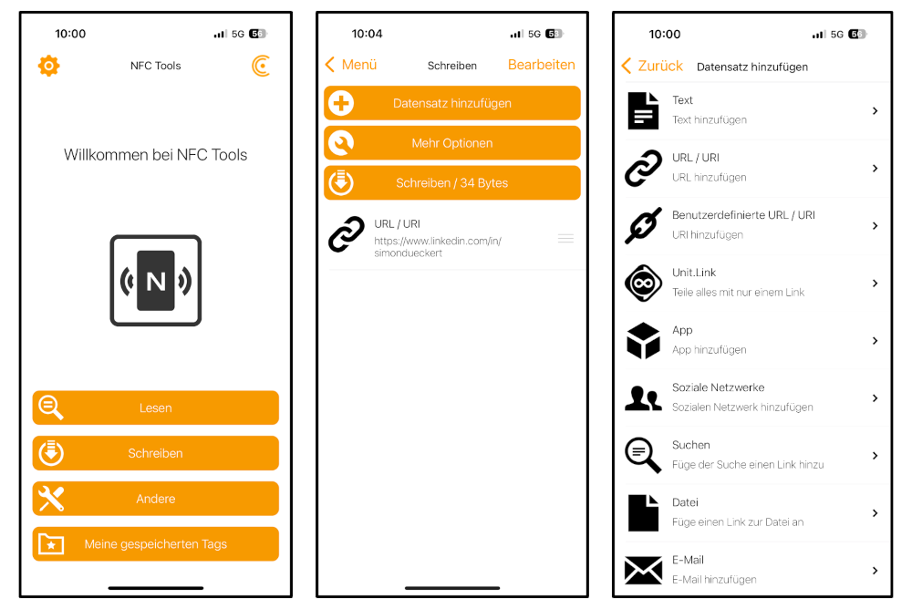

lernOS Smart Card
Als Namensschild erhalten alle Teilnehmer:innen die brandneue lernOS Smart Card. Das ist eine Karte, die ihr z.B. mit Name und drei Hashtags beschriften und auch immer wieder verwenden könnt. Auf der Karte ist ein NFC-Tag aufgeklebt (und einer eingebaut, s.u.), den wir vorab mit dem Link zum lernOS Programm beschrieben haben. Mit einer NFC-App könnt ihr auf der Karte aber auch andere Daten speichern (z.B. Link zum eigenen Linkedin/Mastodon-Profil, elektronische Visitenkarte).

Erste Schritte
Zum beschreiben des NFC-Tags (runder weißer Aufkleber auf der Karte) könnt ihr z.B. die App NFC Tools für iOS oder Android verwenden. Dort wählt ihr "Schreiben" (bzw. bei iPhones „Tag-Typen“, wählt aus was ihr eingeben mögt (URL, Telefonnummer, E-Mail, SMS, FaceTime, Kurzbefehl…) und könnt dann diese verschiedenen Arten von Datensätzen auf den Tag schreiben:

Einige Ideen für die Verwendung (Eurer Fantasie soll aber keine Grenze gesetzt sein):
- URL/URI: schreibt den Link zu Eurem Linkedin-/Mastodon-Profil oder Eurem Blog auf den Tag (wie im Screenshot oben)
- Soziale Netzwerke: wie oben, aber mit der direkten Auswahl von sozialen Netzwerken
- E-Mail: Direkte Kontaktaufnahme per E-Mail (wie mailto: Link)
- Kontakt: Elektronische Visitenkarte mit Name, Firma, Adresse, Telefon, E-Mail und Webseite
- uvm.
Zusatz-Challenge für Technik-Begeisterte
Die lernOS Smartcard hat einen Mifare Classic 1k RFID-Chip, weil die als einzig wiederbeschreibbare Karte bei Wir machen Druck angeboten wurde. Leider stellte sich heraus, dass dieser Chip von iPhone und Android nicht ohne weiteres lesbar und beschreibbar ist 🥲
Deswegen haben wir auf die Smart Card zusätzlich einen NTAG215 Chip geklebt, den ihr mit den o.g. Apps beschreiben könnt (z.B. mit Link zu eurem Linkedin-Profil). Es gibt aber wohl Möglichkeiten, den Mifare-Chip im kompatiblen Format NDEF zu beschreiben. Wer herausfindet, wie das geht, bekommt von uns ein lernOS Maskottchen Suri.
Links:
Wer auf der lernOS Convention ein bisschen basteln will, wir haben einen ACR122U USB NFC Reader und PN532-Module dabei. 😉
Wer auf der lernOS Convention ein bisschen bausteln will, wir haben einen ACR122U USB NFC Reader und PN532-Module dabei. 😉